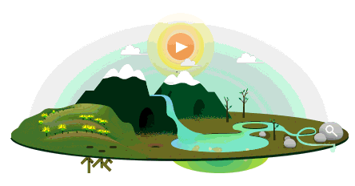

Los residuos son materiales, sustancias u objetos que pierden su utilidad o valor tras cumplir su misión, y que su poseedor desecha. A diferencia de la "basura" (que no se puede reutilizar), muchos residuos pueden ser reciclados, reutilizados o valorizados. Se generan en actividades domésticas, industriales, comerciales o de servicios.
La falta de biodiversidad (pérdida de biodiversidad) es la disminución o desaparición de la variedad de seres vivos (especies, diversidad genética y ecosistemas) en la Tierra. Causada principalmente por actividades humanas —deforestación, contaminación, cambio climático—, reduce la capacidad del planeta para sostener la vida y proveer servicios esenciales.

La pérdida de ecosistemas es la destrucción, degradación o fragmentación de hábitats naturales (bosques, selvas, manglares, arrecifes), provocada principalmente por actividades humanas como el cambio de uso de suelo para agricultura, ganadería e infraestructura. Esto provoca la desaparición de especies y la ruptura del equilibrio natural.
Detener la pérdida de biodiversidad requiere acciones inmediatas como reducir el consumo, proteger hábitats naturales, reforestar con especies nativas, disminuir la contaminación y combatir el tráfico de especies. Acciones clave incluyen consumir productos locales/sostenibles, usar menos plástico, ahorrar agua/energía y apoyar áreas protegidas.